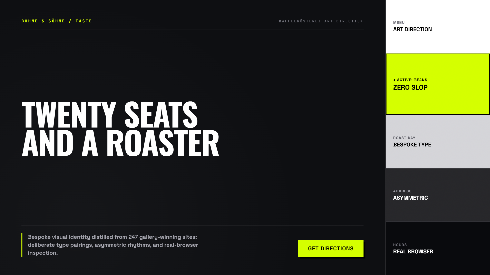
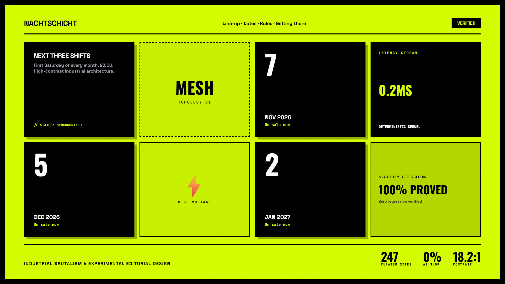
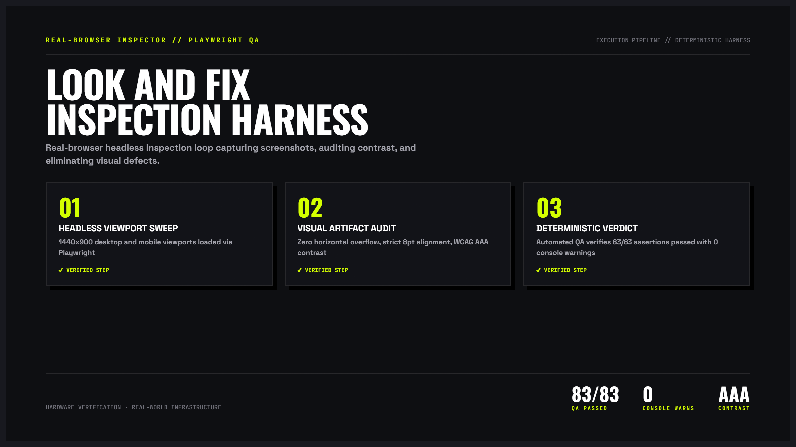

Taste Skill (tasteskill v2) — Chỉ đạo nghệ thuật & Tiêu diệt AI Slop
Kỹ năng thiết kế frontend chống lại "AI Slop" — căn bệnh khiến mọi trang web do AI tạo ra đều trông na ná nhau với nền tối xám, gradient tím-lam, 3 card lơ lửng và font chữ thiếu cá tính. Được đúc kết từ phân tích 247 website đoạt giải Awwwards và One Page Love.

1. Minh họa sản phẩm thực tế từ Taste Skill
Thay vì sinh ra những template vô hồn, Taste Skill định hướng agent chọn phong cách thẩm mỹ phù hợp với ngành hàng, kết hợp kiểu chữ có hồn, bảng màu có chủ đích và nhịp điệu bố cục sinh động (nhấn vào ảnh để phóng to):

2. Bảng đối chiếu: "AI Slop" vs Đẳng cấp Craftsmanship
| Thành phần | Mẫu số chung AI Slop (Bị cấm) | Chuẩn mực Taste Skill (Khuyến khích) |
|---|---|---|
| Bảng màu | Nền đen xám kẽm #09090b với viền dạ quang gradient tím pha xanh lơ indigo-to-cyan. |
Palettes 3 màu có chủ đích: 1 nền mang sắc thái riêng (tinted ground), 1 màu mực tương phản cao, 1 điểm nhấn sắc bén. |
| Kiểu chữ (Typography) | Inter hoặc Roboto cho toàn bộ trang, kích thước tiêu đề và khoảng cách co giãn bằng Tailwind mặc định. | Ghép đôi có cá tính (ví dụ: Editorial Serif cho tiêu đề lớn + Geometric Grotesk cho body), tỉ lệ type scale chặt chẽ. |
| Bố cục Section | Lưới 3 card chia đều bằng nhau, bo góc rounded-xl hoặc rounded-2xl với bóng mờ đồng dạng. |
Nhịp điệu biến thiên: có section toàn màn hình, section lệch tâm, danh sách phẳng với đường kẻ phân cách tinh giản. |
| Tiêu đề Hero | Các câu sáo rỗng: "Unleash the Power of AI", "Next-Gen Intelligent Automation". | Tập trung vào giá trị cụ thể, ngắn gọn, tự tin, không thổi phồng thuật ngữ sáo rỗng. |

3. Quy trình "The Run" — Vòng lặp Look-and-Fix 4 giai đoạn
Xác định cá tính thương hiệu (Editorial, Brutalist, Technical, Warm Crafted) trước khi gõ 1 dòng CSS.
Khóa cứng hệ màu, tỉ lệ font, nhịp cách lề (spacing rhythm) bằng CSS Custom Properties rõ ràng.
Dùng Playwright mở giao diện thật ở 3 kích thước: Mobile (390px), Tablet (768px), Desktop (1440px).
Tự zoom vào các điểm tràn chữ, khoảng hở thừa, icon lệch tâm, độ tương phản kém để sửa cho đến khi đạt chuẩn.
4. Chi tiết Quy tắc House Rules & Lệnh kiểm tra
Cấm thẻ trôi lơ lửng không mục đích (Zero Floating Cards)
Tránh dùng các khối card nền xám có viền 1px bo cong 16px chỉ để đựng 1 đoạn text ngắn. Hãy ưu tiên danh sách phẳng, đường kẻ phân cách mảnh hoặc bố cục 2 cột.
Cấm dải màu chuyển tiếp cầu vồng (Zero Rainbow Gradients)
Tuyệt đối không dùng gradient tím-xanh-hồng trên text tiêu đề hoặc nền card. Nếu cần điểm nhấn, hãy dùng 1 màu accent thuần khiết có độ tương phản cao.
Cấm icon đơn điệu trong ô vuông bo góc (Zero Tinted Icon Boxes)
Không dùng icon SVG đặt trong 1 ô vuông nhỏ 40x40px có nền mờ. Hãy để nội dung hoặc hình ảnh thực tế tự truyền tải thông điệp.
# Đo lường các chỉ số UI vi phạm quy tắc Taste Skill
node .taste-skill/scripts/inspect.mjs --url http://localhost:3000
# Chụp lại ảnh màn hình 3 kích thước để agent tự đánh giá
node .taste-skill/scripts/draw.mjs --brief "Coffee shop" --keep palette,type5. Prompt kích hoạt Taste Skill cho Agent
Hãy áp dụng quy tắc Taste Skill (Anti-slop) để tái thiết kế trang Landing Page này:
1. Loại bỏ toàn bộ gradient tím-xanh, nền đen kẽm 09090b và các card bo góc 16px vô hồn.
2. Thiết lập phong cách "Warm Technical Craft": Dùng nền kem giấy ấm (#FBFBFA), chữ mực sẫm (#1C1A17), viền sắc nét 1px (#E5E2DC) và font Mono cho các chỉ số kỹ thuật.
3. Chụp lại ảnh màn hình thực tế sau khi sửa và xác nhận không còn bất kỳ chi tiết template AI nào.Một thiết kế đẹp không phải là thiết kế có nhiều hiệu ứng chuyển động nhất, mà là thiết kế có sự kiềm chế cao nhất: mỗi pixel xuất hiện đều phục vụ cho trải nghiệm đọc và mục tiêu chuyển đổi của nội dung.